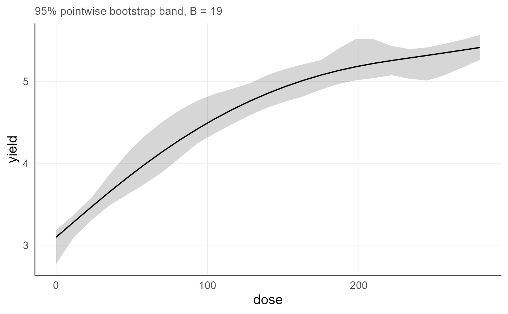
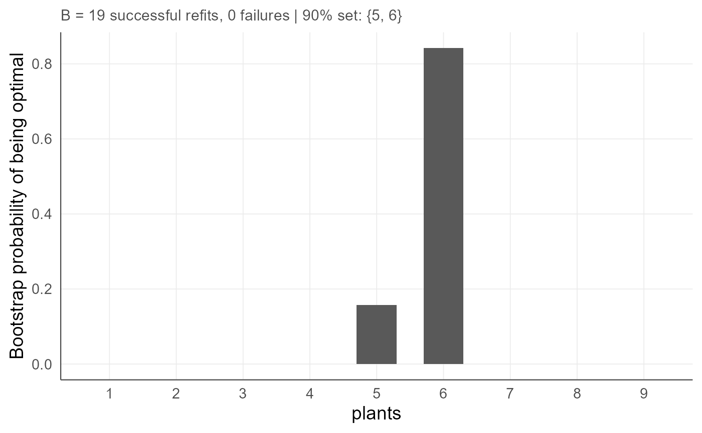
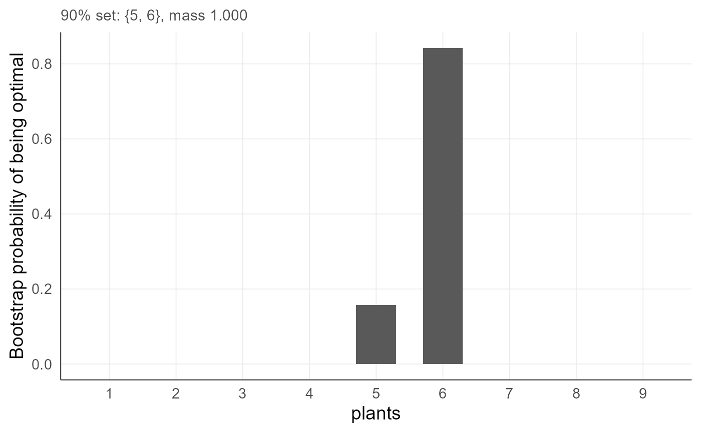
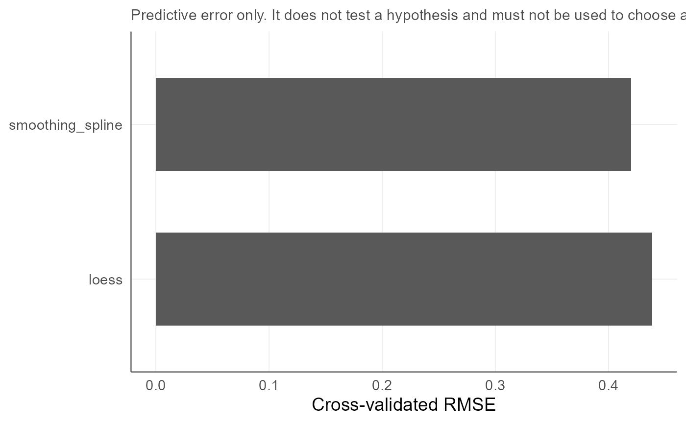

Plot methods for regression result objects
agri_np_regression_plots.RdFigures for the objects produced by the regression module, which previously could only be printed.
Arguments
- x
The object returned by
agri_np_bootstrap,agri_np_compare,agri_integer_bootstraporagri_integer_confset.- level
Optional confidence level. When supplied to the integer bootstrap plot, the decisions inside the corresponding confidence set are highlighted.
- ...
Unused.
Details
A decision expressed as probability mass over admissible integers is far easier to read as a figure than as a table, which is why the integer bootstrap and its confidence set have plot methods. The bars outside the confidence set are drawn faded rather than removed, so the reader sees what was excluded.
For agri_np_bootstrap, a curve target produces the fitted response with
its band, and a coefficient target produces an estimate with its interval per
term, with a reference line at zero.
Examples
data(agri_dose)
data(agri_density)
f <- agri_np_regression(yield ~ dose, agri_dose, method = "smoothing_spline")
# Example 1: the bootstrap band of a fitted curve
b <- agri_np_bootstrap(f, B = 19, n = 25, seed = 1) # use B >= 999 in analysis
plot(b)

# Example 2: probability mass over admissible plant densities, with the
# 90 percent decision set highlighted
fi <- agri_np_regression(yield ~ plants, agri_density, method = "integer_grid",
integer_base_method = "smoothing_spline",
predictor_support = "observed_integer")
bt <- agri_integer_bootstrap(fi, B = 19, seed = 1)
plot(bt, level = 0.90)

plot(agri_integer_confset(bt, level = 0.90))

# Example 3: cross-validated error of competing engines
cmp <- agri_np_compare(yield ~ dose, agri_dose, kfold = 4, seed = 1,
methods = c("smoothing_spline", "loess"))
plot(cmp)
